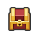

鼹鼠拳套1-1 · 旅馆
已探索区域 · 骑士与通道
1-1 · 旅馆
稍作休息
WASD 移动 · J 攻击 · 空格交互
按住空格奔跑 · M 地图
STAGE CLEAR
穿过森林
小公主的足迹通往森林另一端。
在线玩 · 世界 1
跟随小公主的足迹，踏上森林中的冒险。
1-2 主线流程复原中。入口剧情、教学与出口已开放；部分分支和表现仍在校对。
首次冒险
WASD / 方向键移动，按住空格奔跑
J / Z 攻击，K 武器技能，空格交互 / 跳下高台
点击对白 / 空格继续剧情
M 地图，Esc 暂停
进度自动保存在当前浏览器。

鼹鼠拳套已探索区域 · 骑士与通道
1-1 · 旅馆
WASD 移动 · J 攻击 · 空格交互
按住空格奔跑 · M 地图
STAGE CLEAR
小公主的足迹通往森林另一端。